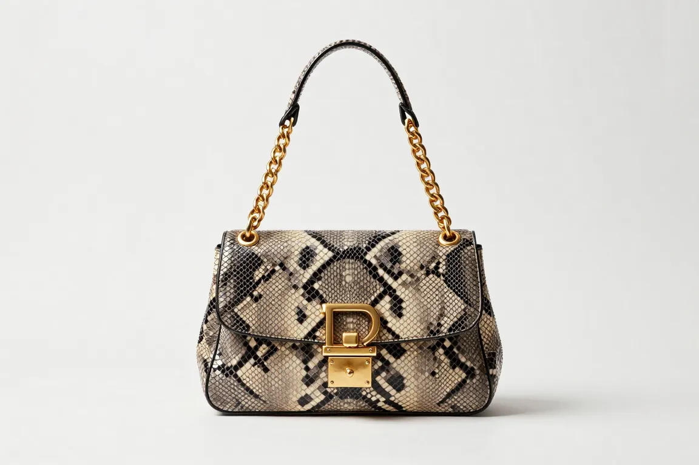

fashion · 1997–2010 · also: Waiting-list handbag, Bag of the season
The handbag that a house makes as the object of one season. It has a new shape in a bold material, a small run and a waiting list. A star carries it, and the street copies it within months.

Core thesis
A single bag can carry the whole fashion of a season, and its scarcity is part of its design.
Design principles
Give the bag one clear shape that a child can draw: a short strap bag, a saddle, a padlock tote.
Name the bag, so that people ask for it by name.
Cover it in a bold surface: beads, python skin, patent, studs or a woven weave.
Make a small first run, under 5,000 pieces, with a waiting list.
Give it to a star in the first month, so that the press shows it.
Carry it under the arm or on the shoulder, 20 to 30 cm wide.
Add a heavy gilt hardware piece as the second sign.